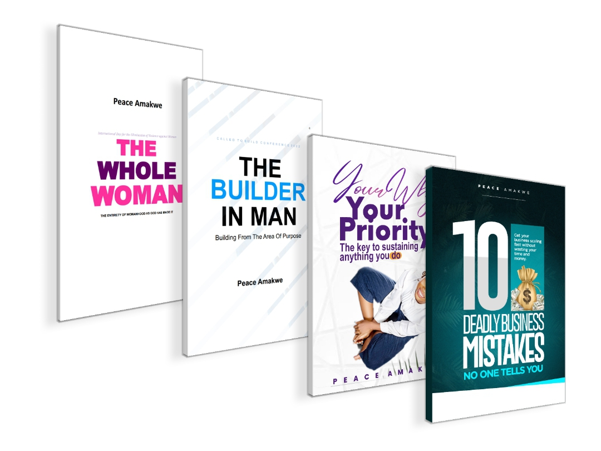

The Purpose Leadership DoctorPeace Amakwe helps founders, executives, and high-performing dealmakers operate under pressure with emotional control, decision clarity, and execution consistency.
She is the creator of the Emotional Leverage Operating System™ (ELOS), a high-stakes performance framework that turns emotions from a liability into a measurable advantage, protecting revenue, authority, and long-term influence.
Most advisors treat emotions as something to "manage.”
Peace engineers them for performance under pressure.
Her work sits at the intersection of:
Peace Amakwe is a Medical Doctor, giving her deep insight into:
This scientific foundation allows her to design structured, repeatable performance systems, rather than motivational advice.
Peace works with high-stakes operators who want to:
A high-stakes performance system that develops:
Flagship Program:
Founder of Belopeaco, a platform for leadership and performance systems.
Led initiatives including:
Peace has authored practical guides for:
Selected Works:
Her writing focuses on clarity, measurable outcomes, and execution.

Peace is also:
Her diverse experience allows her to communicate complex ideas clearly and persuasively.
“You don’t rise to your goals. You fall to the level of your emotional control.
She believes:
EMPA™, TYEF(10X)P™, and CTBC — flagship programs focused on leadership
"Before this, I used to rush decisions when things got intense. I thought moving fast meant I was doing well, but it actually led to mistakes, confusion in my team, and unnecessary stress.
Working with you helped me slow down in the right way. I became clear. I started thinking better under pressure instead of just reacting.
In the past few months, things have changed. We have had fewer errors, my team understands exactly what to do, and our projects have started running more smoothly. Even the way my team responds to me is different now. There’s less tension.
The biggest difference is how I feel in tough moments. I’m calmer, more in control, and more confident in my decisions.
This has made a real impact on my work and my results. It’s something every serious leader should experience."
I.M. Williams
In high‑stakes environments, pressure isn’t just a challenge—it’s a performance differentiator. Psychological research shows that time pressure intensifies cognitive and emotional strain, pushing many leaders to prioritize speed over depth and rely on familiar heuristics at the expense of strategic accuracy. This isn’t an inherent flaw in intelligence, but a predictable response of the human brain under stress; when cognitive load spikes, analytical reasoning gives way to instinctive shortcuts that can compromise long‑term outcomes.
However, the leaders who thrive in pressure aren’t those who ignore stress—they are those who manage it. Studies in organizational psychology demonstrate that executives with high emotional discipline regulate their reactions rather than suppress them, allowing them to sustain situational awareness and avoid error‑prone reflexive choices when stakes are highest. This ability to regulate emotional responses doesn’t remove pressure, but it prevents pressure from distorting judgement, leading to decisions that are both calm and strategic even when uncertainty is acute.
This is why decision clarity under pressure isn’t a soft skill—it’s a measurable performance advantage that directly influences revenue, risk mitigation, and sustainable leadership authority.
Decades of leadership research reveal a direct link between emotional intelligence (EI) and decision quality for top executives. Studies on strategic decision processes show that leaders who can recognize, understand, and regulate their emotions—not just rationalize them—consistently make more balanced and effective decisions under high‑pressure conditions. This isn’t speculative; empirical surveys of top managers found a strong positive relationship between emotional intelligence and strategic decision quality, with emotionally self‑aware leaders better able to weigh risks, opportunities, and outcomes objectively.
Furthermore, cutting‑edge organizational research underscores how emotional intelligence shapes execution consistency—leaders with high EI tend to foster trust, encourage collaboration, and stabilize performance outcomes even in volatile environments. When leaders manage their own stress and understand the emotional dynamics of their teams, they reduce conflict, increase clarity in execution plans, and improve overall organizational resilience. These traits aren’t “soft”—they’re strategic performance drivers that separate average outcomes from exceptional, repeatable success.
In practice, this means investing in emotional discipline and performance systems isn’t just coaching—it’s performance architecture that protects revenue, influence, and long‑term growth.